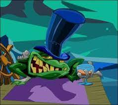
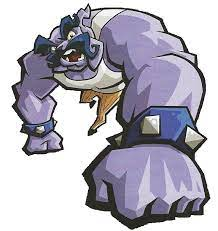
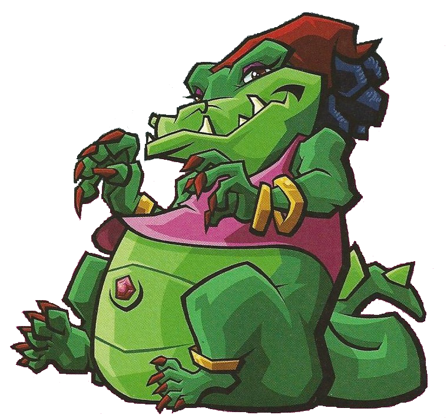
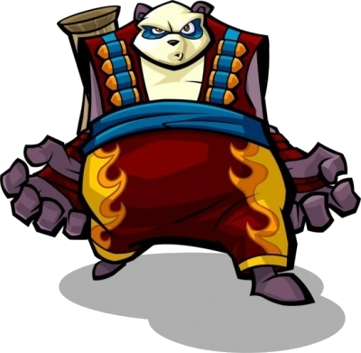
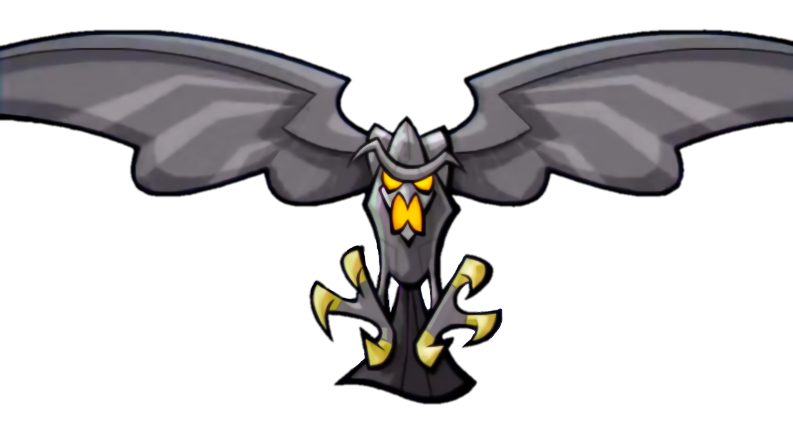

|
Raleigh  |
Raleigh era um sapo entediado com sua vida de riqueza e privilégios. Por essa razão, desenvolveu um interesse pela pirataria. Sua habilidade em construir máquinas o levou a ser recrutado como maquinista-chefe dos Cinco Malignos. Após o ataque à casa de Conner Cooper, Raleigh escapou e se estabeleceu na Ilha da Ira, onde construiu uma "máquina de tempestade" que gerava chuva e ventos fortes, afundando navios para saquear. |
|
Muggshot  |
Muggshot nasceu o menor da ninhada, sendo o fraco da vizinhança e constantemente perseguido por cães maiores. Inspirado por seus ídolos do cinema, ele passou a infância se exercitando até se tornar um massivo brigão de rua. Seu sonho de ter poder e respeito finalmente se realizou ao ingressar nos Cinco Malignos. |
|
Mz. Ruby  |
Nascida em uma família de místicos, Mz. Ruby era temida por outras crianças devido aos seus estranhos poderes. Anos de amargura a levaram a usar seus talentos vodu para o crime, tornando-se a mística chefe dos Cinco Malignos. Ela fugiu para as selvas do Haiti com os manuscritos de Slytunkhamen Cooper I e usou seus poderes para criar exércitos de fantasmas. |
|
Panda King  |
Nascido na pobreza, Panda King ficou fascinado com os fogos de artifício dos nobres. Após uma década aprendendo a arte, foi humilhado por eles ao oferecer seus serviços. Enfurecido, passou a usar os fogos para o crime, destruindo vilas e casas. Foi recrutado pelos Cinco Malignos como especialista em demolições. |
|
Clockwerk  |
O mais temível dos Cinco Malignos. Clockwerk viveu por milhares de anos tendo substituído seu corpo real por máquinas, alimentadas pelo ódio e inveja do Clã Cooper. Por quase toda sua vida perseguiu os Cooper. Ele fundou os Cinco Malignos e liderou o ataque que matou o pai de Sly e roubou o Thievius Raccoonus. |